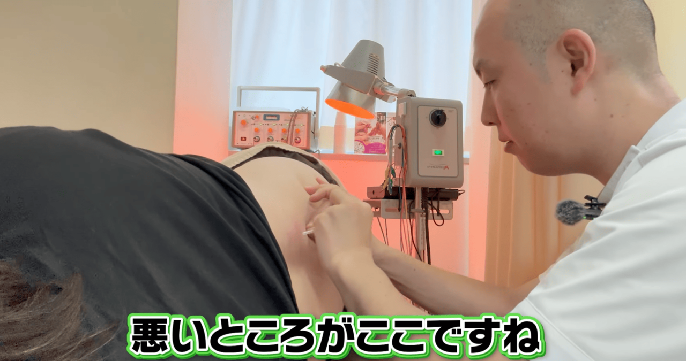
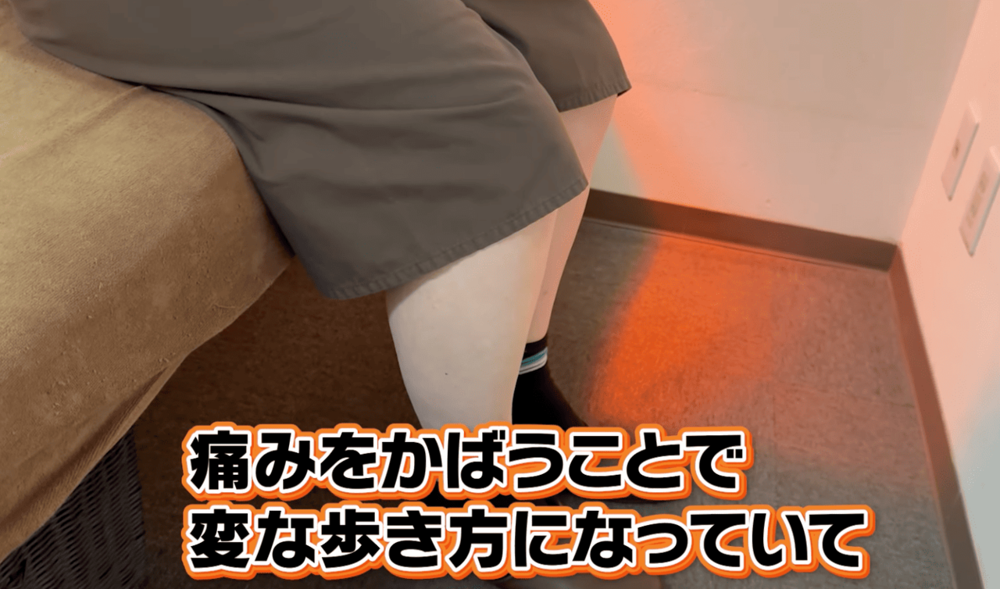
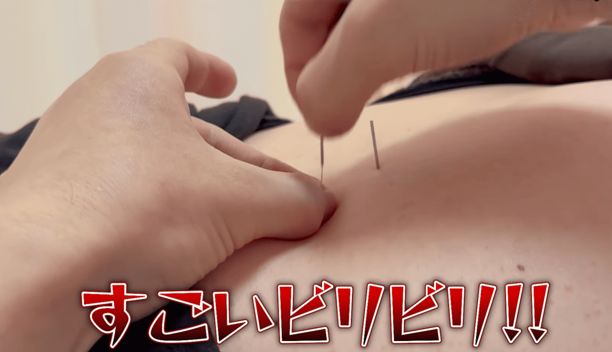
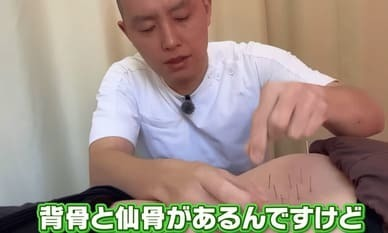
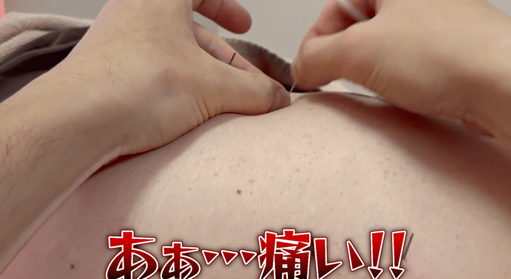
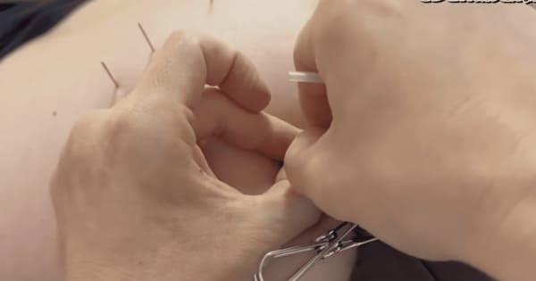

腰椎椎間板ヘルニアの鍼灸
髄核の突出による腰痛・下肢のしびれに対し、腰とお尻・骨盤の深層筋から逃避反射の悪循環を断つ施術解説。
まず知っておきたい要点と改善の流れ
腰の背骨のクッション（椎間板）に過剰な負荷がかかり、線維輪が破れて中の髄核が飛び出し神経を圧迫・炎症させることで発症します。痛みをかばう「逃避反射」が長引くと姿勢が歪み、腰だけでなくお尻や骨盤まわりの筋肉・靭帯まで硬直して悪循環に陥ります。（公式解説）
このようなお悩みはありませんか？
- ✓腰痛から始まり、お尻や太もも・脚にかけて強い痛みやしびれが広がっている
- ✓長時間の前かがみ・中腰や重い物を持ったあとに症状が悪化する
- ✓しばらく歩くと足がしびれて休みたくなる（間欠性跛行）
- ✓ブロック注射や内服薬、コルセットを続けてもスッキリ改善しない
当院の施術アプローチ・改善の流れ
なぜ鍼灸で改善へ向かうのか？（作用機序の図解）
腰椎椎間板ヘルニアに対する鍼灸は、トリガーポイント解放と疼痛抑制系の作用機序を通じて、お体本来の回復力を引き出します。

手技では届きにくい深層筋の硬結（トリガーポイント）へ繊細な鍼で直接刺激を届けます。
CGRPや一酸化窒素の放出により微小血管が拡張し、滞っていた発痛物質の洗い流しを促します。
脊髄後角で痛み信号を遮断し、脳幹からの内因性鎮痛物質（エンドルフィン等）の働きを高めます。
防御性の筋スパズムが解け、関節可動域と本来の動きやすさが段階的に回復します。
院長YouTube解説・関連動画
椎間板ヘルニアは椎間板に過剰な力が加わり線維輪が破れ髄核が飛び出る

椎間板は背中の骨と骨を結ぶものです。中心部にはゼリー状の髄核という組織があり、その周りを丈夫な線維輪という組織が包んでいます。椎間板は椎体間の上下方向への荷重や椎体間の可動性に対するクッションのような役割をしています。
椎間板ヘルニアは椎間板に過剰な力が加わることによって椎間板の線維輪が破れて、中にある髄核が外に飛び出てしまう状態のことです。
飛び出てしまった椎間板組織が神経を圧迫したり、神経に炎症を引き起こしたりするため、椎間板ヘルニアでは神経が関係している場所に痛みやしびれを感じます。
高齢者よりも20代から40代にかけての比較的若い男性に多く発症します。長い時間前かがみや中腰の姿勢を続けたり、重たいものを急に持ち上げたりしたときなどに発症のリスクがあります。
主な症状は腰痛、下肢のしびれ、疼痛、間欠性跛行

腰椎椎間板ヘルニアの主な症状は腰痛、下肢のしびれ、疼痛、間欠性跛行です。この状態が長く続くと神経の障害が強くなり、下肢の筋力低下も現れることがあります。さらに末期的には膀胱直腸障害が見られることもあります。
腰椎椎間板ヘルニアのため障害されている神経の部位によって、下肢のしびれや疼痛の部位が異なり、筋力低下が現れる筋肉の種類に違いがあります。
初期段階では、重い荷物を持ち上げたり、重い荷物を持った次の日に、腰痛や下半身にしびれが起こることが多いです。痛みの箇所は、腰痛から始まって、お尻、脚付近に広がることが多いです。
痛みがある場合の改善方法は、ブロック注射や内服薬

腰椎椎間板ヘルニアでしびれや痛みがある場合の改善方法は、ブロック注射や内服薬です。コルセットなどの装具の着用を勧められることもあります。
上手く歩けないなどの歩行障害がみられたり、なかなか症状が改善されないときは手術を行うこともあります。手術の方法は後方椎間板切除術や椎間固定術です。
近年では、注射でヘルニアを縮小させるヘルニコア注入やオゾン法など、体への負担が少ない方法も改善の選択です。
🎥 他のYouTube切り抜き・解説を読む（あと1件）▼
30代女性Aさんのケース

・症状の経緯
2、3年前に突然足の痺れが強くなったのをきっかけに元々腰痛もあったのでヘルニアを疑い近所の病院に通ってMRIを撮ると腰椎椎間板ヘルニア、坐骨神経痛、梨状筋症候群という病名が出た。
ブロック注射を3年くらい毎月4回MAXの量を打って内服もMAXの量を飲んでいたが改善せず、痛みをその場でおさめるだけの状態が3年続いた。今こんな生活をしていて将来どうなるのか考え、有名な整体や鍼に回って時間もお金も労力もかけたが変わらず、薬がないと日常生活を送れないくらいしんどい状態が続いた。インスタグラムをきっかけに最後の希望くらいの気持ちで来院した。
・実際受けてみた経過
施術を受ける前まで強い痛み止めをMAXの量で1日4回飲む生活だったが1回目の施術を受けて薬の量が減った。自分で量を調整して生活できるようになったのは大きな変化。
・足の痺れの状態
左足が痺れる。横になっていたり座っていたりすると時間経つと痺れて臀部痛もある。最初がMAX10の痛みだとしたら今は5〜6くらいまでは落ち着いてきている。０にしたいと思っている。
状態は良好です。前は症状が強過ぎて可動もできなかった状態でしたが、今は腰だけ残っています。腰の痛みはもっと凝縮されこれからも増します。今後もストレッチ、アッサージや激辛などの刺激を受ける行動や食事は控えてください。
頭痛は20歳過ぎてからずっと常にロキソニンとは一緒にいるということですが、もう少し首が楽になれば頭痛も楽になります。
抱えている症状は体重や体型や姿勢は全く関係ありません。施術者が改善することができないいわけでしかないのです。体重の場合はそのサインがあります。Aさんの状態は痩せた人でもなる人はなります。
背骨と仙骨の繋ぎ目が固まって神経を圧迫しており、悪い部分にコラーゲンが集まってケロイド化した筋繊維ができることで痛みが出ています。そのため、鍼で繊維化した筋肉を切り刻んで元の筋肉にする必要があります。そして再生して改善に向かいますが、再生していく過程で辛さが1番悪いところに寄っていきます。
今後、お尻に違和感はなく痺れは出にくくなりますが、どうしても重くて痛いというのは残ります。残り６割の状態で、もう一声超えられれば薬も辞められるとみています。

・お悩みの症状
腰椎ヘルニアによる腰痛、左臀部の痛み、左足の痺れ。
・今日の調子
今までに比べたら腰の痛みは落ち着いてきていて、薬を飲む回数も4回が2回で落ち着いているが、横になった時の左の臀部の奥の方の痛みから左足の痺れは残っている。首も痛いより重い感じがあり、この1ヶ月に何度か吐き気を伴う頭痛があった。
・他の場所の症状
両踵が足底筋膜炎なのかすごく痛い。冷やしたりしているがジンジンしてなかなか歩けない。歩行を庇うため腰が痛むという悪循環が起きている。踵全体が炎症が起きている感じで、体重をかけると痛い。痛みを庇うことで変な歩き方になり、より痛む。
状況はすごく良いです。前は上向くと首が痛く体を倒してもお尻や腰が痛かったという訴えでしたが今はそのサインが腰を反って左腰が痛いという１個になったため、それが良くなればお尻の痛みが取れます。
今回の症状は1つの部位だけではなく、さまざまな箇所にある痛みを取ることが必要です。腰を反って痛いのがまだ残っているためまだ辛いと思いますが状況は残り３割です。
吐き気を伴う頭痛は腰からきているため腰が改善することで頭痛も改善します。踵は時間が経っても引いていないため問題です。今回の施術は腰を中心に鍼をし、電気の鍼も行ながら、吐き気や歩行の問題の改善を図っていきます。
悪いサインが消えていて経過は良好です。残りの３割は左腰とお尻です。腰を反っても痛くなくなると相当楽になります。ただこの症状の難しいところが、お尻の痛みが取れると足の痺れも改善するのですが、完全に改善するには腰、股関節、お尻が安定しないとダメなことです。
イメージは正座です。正座して足が痺れると正座をやめても痺れが取れるまでタイムラグがあります。足の痺れは片足だけ正座しても取れません。そのように１つの原因を取り除くのではなく全てを取り除かないと痛みの原因は無くならないのです。
Aさんの場合悪いところは９cmのところにあるためそこを抉っていきます。中の筋肉を切り刻まないといけません。悪いところにコラーゲンが集まってケロイド化した筋繊維ができることで痛みが出ます。
踵の痛みはだいたい骨の膜にくっついている神経が興奮して起こるため、その骨の膜に鍼を入れていきます。
Aさんには今回の施術で、3年間お尻が痛いと色々なところで言い続けていてもイマイチどこが悪のいのかよくわからない状態でいたけれど、鍼を刺してもらって自分の中で痛い場所を納得できたと言っていただきました。９cmの鍼を刺すことで深い場所にあったことがわかったのです。
マッサージもそうですが普通に押しても１cmしか入らないため９cmは手術レベルですごく深いです。
本日は悪いところの２箇所をみっちり行いました。腰を反って痛みがなくなったので悪いところにだいぶアプローチができました。あと3回くらいで改善する見込みです。
・今日の調子
良くも悪くも維持している。左臀部の痛みは強い。足の痺れは臀部痛が出た時に伴って起きるが、それ以外は気にならない。痺れは膝下くらいに起きる。
・1回目との調子の違い
初回と比べると全然良い。薬の量も半分以下に落ち着いている。長時間座っていたり立ちっぱなしだと痛みが出るのは変わらない。
悪いところは少しずつ良くなっています。腰とお尻、首が左に寄っているのでそこを改善するように仕向けていきます。
この症状は腰が悪いですが、腰だけ改善してもダメです。お尻が変化すると腰も良くなります。そのために坐骨神経が通っているところに直接９cmの鍼を入れて施術していきます。
痛い期間が続くと体が曲がってきて、体が一生懸命痛みから逃がそうとして体がまがってきます。すると曲がった状態から戻せなくなって悪循環に落ちいってしまうのです。これは人間の逃避反射という現象です。逃避反射が起きると周りの靭帯も硬くなり姿勢が戻らなくなり症状がより強くなります。
そのため、首の付け根の靱帯も切り刻んでいきます。Aさんは背骨の際の人体が反骨化して動きが悪くなっているため、丁寧に切り刻みます。
優しい鍼は悪くないのですが、優しい鍼は優しい刺激が好きな人にしか効きません。人間は適性の刺激と症状の深さによってアプローチ方法がかわります。当院でも表面的な症状や内面的な要素が強い人の場合は８割に優しい鍼をします。しかし、体のサインが残っていると良くなっている感じがしないためしっかり鍼をするようにしています。
良くなると左腰の症状が強くなるはずですが、足の痺れは取れてきます。辛さは変わらないか少しひどくなると思いますが、症状は鎖骨神経痛ではなくて腰痛に切り替わります。
腰とお尻のストレッチ、激辛は禁止です。腰の状態とお尻の状態が本調子でないため、体感としては症状があってしんどいと思いますがお尻がもう少し良くなり完全に取れると腰が良くなり違和感がなくなるとゴールです。

・腰と坐骨神経痛の状態
腰痛は落ち着いている。坐骨神経痛はある。左臀部痛と左足全体の痺れは横になった時が1番顕著に現れる。右足は0ではないが座っていると少しのだるさはある。辛さのマックスを10だとすると、今は全体で考えると３〜４。
・頭痛はまだあるか
頭痛はこの１〜２週間厄介だった。前側が痛かった。仕事はデスクワークで、座っている時に一番頭痛が出る。こめかみの痛みは日によるが最近は前が多く、頭痛が来る時のパターンがある。首が痛くなってだんだん頭が痛く重くなって気持ち悪くなるパターンで、首が痛いのか後頭部が痛いのか眼精疲労なのか前側の頭が痛いのかわからないような状態。ロキソニンと酔い止めの薬を飲んで様子を見ている。
・鍼の痛みについて
鍼は感じたことのない衝撃が来ますが、今までの痛みや辛さと比べると全然耐えられる。
体を見た結果、上を向くと首から背中まで痛みがありました。左の腰から臀部まで若干の痛みがあり、寝ていても左足全体と腰が痛いという訴えがあることから、まだ腰とお尻の痛みの原因が残っていることがわかります。これは、大腰筋の筋肉が張り続けている状況です。
施術の感触としてはすごく良く、お尻と腰だけ残っている形のためお尻がもう少し安定することを目的にに施術を行います。悪いところを改善するためには周りから改善することが必要です。股関節を曲げた時にお尻に響かなくなると良いため、そこを狙っていきます。経過は悪くなく、周りの悪いサインは少なくなっていますが根っこに残っているのでそこを改善していきます。
現状の辛さが３〜４割であればで今の状態は体の状態と症状が一致しています。これが違う人も多いです。体は良くなっても症状が改善しない人もいるのです。そうなると推測が必要ですが、今回はまだ根っこが残っているだけのためそこに対してアプローチを行います。
坐骨神経痛の改善の仕方はそんなに難しくありません。坐骨神経の通り道を抉ることです。多くの人は３〜４回で完全に回復しています。ただし体が出来上がらない限りはずっと痛いです。股関節を上げて腰を反っても痛くないところまでいかないと改善しません。そこまでいく回数は非常に人によって違い、時間がかかる人もいます。坐骨神経単体なら１〜2回で改善します。
電子温灸を使って９cm下の筋肉に対してしっかりアプローチしていきます。また、頭痛のもとになっている脊椎の可動性の悪さをとっていくために悪いところは切り刻んでいきます。腰に関しても電気で刺激を与えて悪いところの筋肉の再生を促していきます。
施術後、痛みがある場所が少し改善しました。ひねったときの辛さがなくなるともっと良いです。腰を中心に行い根本的な原因の改善を図り、電気での施術も行いながら完全回復まで目前です。根本的な原因はまだ残っていましたが、あと数回で大幅に改善する見込みです。
・痛みがある部分について
調子は大きくは変わらない。痛みの部分も左臀部の奥の痛みと左足全体の痺れがあり、腰の痛みも多少ある。右臀部は痛みがない。坐骨神経痛も変わらず、仰向けの時は痺れる。頭痛はこの２週間ひどくはなかったが何度か出た。
・いつ痛みを感じるか
横になっている時に臀部の痛みと痺れが1番出る。犬を抱っこしているときにも同じくらいだんだん左足の痺れが出る。
・上を向いた時に痛むのはどこか
首から肩甲骨まで左右両方痛い。首と頭はいつも鍼はいつも重い感じがする。
Aさんは左の腰から臀部までの痛みが手強い状態です。見るとお尻の痛みは取れてないため、そこが取れるともっと良いです。股関節を曲げた時の腰に響く感覚がなくなってくると腰の痛みが取れやすくなります。腰は前よりも良く可動域も広がっていますが根っこだけ残っている印象のためそこを取り除いていきます。
お尻の筋肉はほとんど改善しています。お尻の筋肉が腰の方を引っ張って痛みが起きているのではなく、腰を引っ張っている仙腸関節と仙結節靭帯にアプローチをしていきます。
犬を抱いて痺れるのは荷重がかかるのもありますが、何かが原因で犬を抱いて痺れるのではなくそもそも体がダメだから痺れるのです。改善すれば痺れなくなります。曲げたり倒しても痛みや違和感がなくなる体を目指すことで痛くなくなります。
Aさんは根っこが深く一般的なパターンとは少し違います。筋肉の痛みが取れたりほぐれたりすれば改善する症状ではありません。発症から時間が経っているため体が悪い状態を記憶して庇うことで体が悪い状態で完成していきます。このような状態の人は鍼に来る人に多いです。この場合1回鍼で体を壊すことが必要です。
上海中薬大学に研修に行った時中国人の先生が非常に痛い鍼をしています。痛いところに鍼を刺して痛い電気を流して1時間でした。当時はこんなに痛めつけたら体も悪くなると思っていたが自分の今痛い鍼もやっています。悪いところがあって悪いところをなおせば改善するということをみんなやりますが壊すくらい1度やることが必要です。
鍼灸は筋肉や靭帯を壊して再生させて良くする改善法のためみんなびっくりするが経験を積むと理解できます。
辛いのが左足のためいつも左腰を狙っていますが今日は狙い方を変えて骨盤の中に鍼を抉って悪い箇所にアプローチをしています。
Aさんの痛みは骨盤の腸骨と仙骨の繋ぎ目のところがずれているのが原因です。1回固まったところを傷つけて体を動かしていくうちに元の場所に戻るという考え方で施術をしています。調子が良ければどんどん歩いてほしいです。
今回Aさんには腰を中心に根本的な原因の改善を図りました。電気も使ってもうすぐ完全回復を見込んでいます。
筋肉、骨のお悩みのツボ図解とセルフケア
実際の施術ではお一人おひとりの体質・症状に合わせて選穴しますが、筋骨格系疼痛（腰痛・関節痛・頸肩痛・坐骨神経痛）の臨床でよく用いられる代表的なツボの目安です。

📌 代表的なツボの詳細一覧表を開く（6穴） ▼
| ツボ名 | 位置の目安 | 主な狙い | セルフケアの注意点 |
|---|---|---|---|
| 腎兪（じんゆ） | へその高さの背骨（第2腰椎下）から指2本外側 | 慢性腰痛・腰背部の疲労緩和 | 強圧を避け温灸やカイロでの温熱ケアが安全 |
| 委中（いちゅう） | 膝裏の横ジワの中央 | 腰痛・坐骨神経痛・下肢後面の張り緩和 | 血管・神経が浅いため優しく押圧 |
| 環跳（かんちょう） | お尻の横のくぼみ（大転子と仙骨下端の間） | 坐骨神経痛・殿部〜大腿外側の放散痛ケア | テニスボール等の強押しは神経悪化に注意 |
| 陽陵泉（ようりょうせん） | 膝外側下方、腓骨頭の前下のくぼみ | 膝痛・こむら返り・全身の筋緊張緩和 | 総腓骨神経近接のためしびれが出る強押し禁止 |
| 風池（ふうち） | 後頭部の生え際、首の太い筋の外側のくぼみ | 頸肩痛・首こり・緊張型頭痛の緩和 | 頭を反らしすぎず心地よい強さでゆっくり |
| 肩井（けんせい） | 首の付け根（第7頸椎）と肩先を結ぶ中央 | 肩こり・頸肩部の重だるさ軽減 | 妊娠中は強い刺激を避ける。揉み返しに注意 |
国際査読論文の科学的エビデンス
国際的な医学データベース（PubMed・Cochrane等）で報告されている筋骨格系疼痛（腰痛・関節痛・頸肩痛・坐骨神経痛）領域の代表的な査読済み鍼灸研究をまとめています（標準治療との併用や研究上の限界を含めて正確に掲載）。
📚 査読論文データ・PubMed出典リンクを開く（4件） ▼
| 年・研究デザイン | 対象・規模 | 主な結果 | 限界・出典 |
|---|---|---|---|
| 2018年 IPDメタ解析 | 慢性筋骨格痛・頭痛 39 RCTs（n=20,827） | 全領域でシャム鍼・無治療比とも有意優位（P<0.001）、1年後も効果低下約15%で持続。 | 対照設定により効果量変動。 J Pain (PMID: 29198932) |
| 2020年 Cochraneレビュー | 慢性非特異的腰痛 33 RCTs（n=8,270） | 無治療比で直後疼痛（MD -20.32）と機能（SMD -0.53）が臨床的に有意改善。有害事象は軽微。 | 施術者盲検化不可・確実性は中等度〜非常に低。 Cochrane (PMID: 33306198) |
| 2024年 多施設RCT | 慢性坐骨神経痛 216名（6病院・52週追跡） | 4週時点の下肢痛VAS減少30.8mm vs 14.9mm（差-16.0mm, P<0.001）、52週後も持続。 | 中国3次病院限定・施術者盲検化不可。 JAMA Intern Med (PMID: 39401008) |
| 2016年 メタ解析 | 変形性膝関節症 10 RCTs | 短期（13週）で疼痛（WMD -1.24, p<0.001）と機能（p<0.001）が有意改善、26週も機能維持（p=0.016）。 | 試験間の異質性が高く運動療法併用が推奨。 JBJS Am (PMID: 27655986) |
参考文献・出典
- 銀座そうぜん鍼灸院「腰椎椎間板ヘルニアの公式解説ページ」
- 2018年 IPDメタ解析（慢性筋骨格痛・頭痛 39 RCTs（n=20,827））— J Pain (PMID: 29198932)
- 2020年 Cochraneレビュー（慢性非特異的腰痛 33 RCTs（n=8,270））— Cochrane (PMID: 33306198)
- 2024年 多施設RCT（慢性坐骨神経痛 216名（6病院・52週追跡））— JAMA Intern Med (PMID: 39401008)
- 2016年 メタ解析（変形性膝関節症 10 RCTs）— JBJS Am (PMID: 27655986)
よくある質問（FAQ）
Q. 腰椎ヘルニアでやってはいけないことは何ですか？▼
Q. 腰だけでなくお尻にも施術するのはなぜですか？▼
Q. 排尿・排便の異常（膀胱直腸障害）や強い麻痺がある場合は？▼
あわせて読まれる関連疾患（筋肉、骨のお悩み）
お尻から足後ろ側へ広がる痛みやしびれ。原因を見極め、腰・臀部・股関節の深層筋へ的確にアプローチします。
40〜60代に多い肩の激痛・可動域制限（五十肩）を、炎症期と拘縮期の見極めと鍼灸・全身バランス調整で改善する解説。
頭痛・吐き気を生む慢性肩こりに対し、深層筋へのトリガーポイント鍼灸と脳・自律神経ケアで根本改善する解説。
急性ぎっくり腰から慢性的な筋・筋膜性腰痛まで、深層筋（脊柱起立筋・腰方形筋・大腰筋など）から整える解説。
HTLV-1ウイルス感染者の一部に発症し、脊髄の炎症により両下肢のつっぱり・歩行障害や排尿障害が徐々に進む疾患です。
成長期の中高生がスポーツ中の急激な筋収縮により、骨盤の骨端線付着部で骨の一部が剥がれて起こる骨折です。
おひとりで悩まず、まずはご相談ください
銀座本院・川口・大宮・横浜・博多・田無の各院でご予約を承っております。